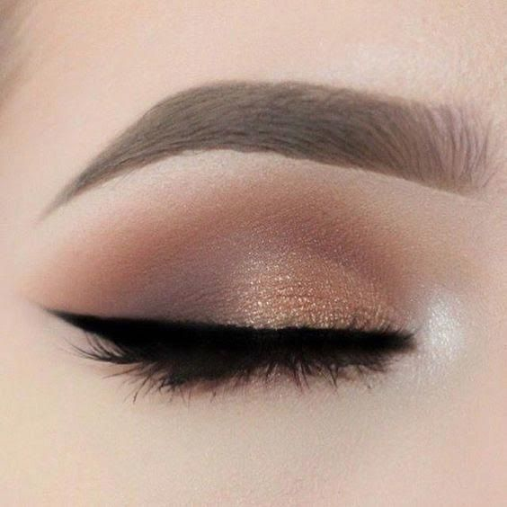
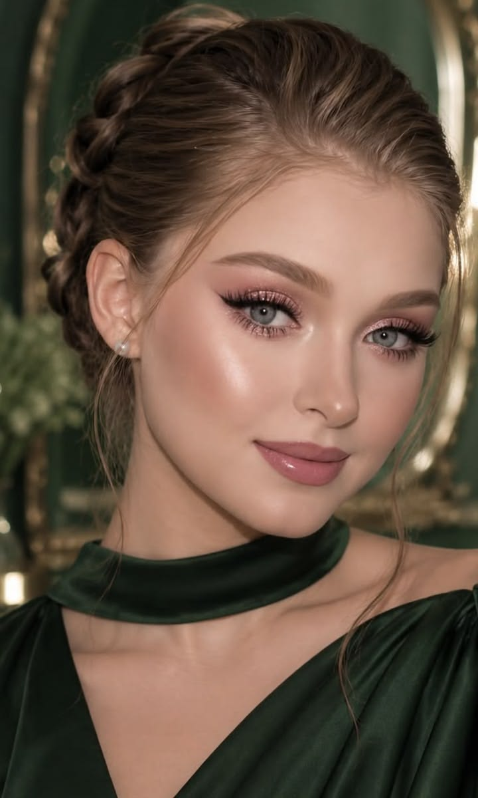
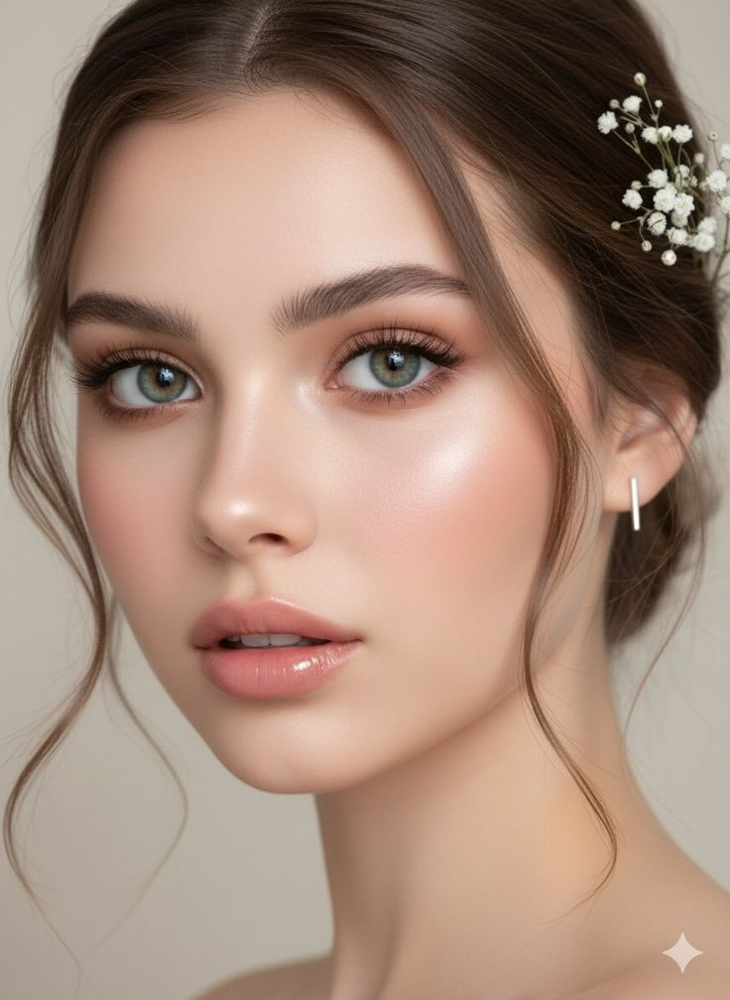

Makeup Types
Explore diffrent types of makeup looks and find the perfectstyle for every occasion.

Natural Makeup
Natural makuep give a simple, fresh and soft look.It is perfect for everyday use.

Party Makeup
Party makeup create beautiful and attractive look for parties and special events.

Bridal Makeup
Bridal makeup is a special look for weddings and other important celebration.

Eye Makeup
Eye makeup includes eyeshedow,eyeliner and mascara to create beautiful eye look

Glam Makeup
Glam makeup give a bold and stylish lokk for special occasions and events.

Casual Makeup
Casual makeup is easy, comfortable and perfect for a simple day-to-day look.